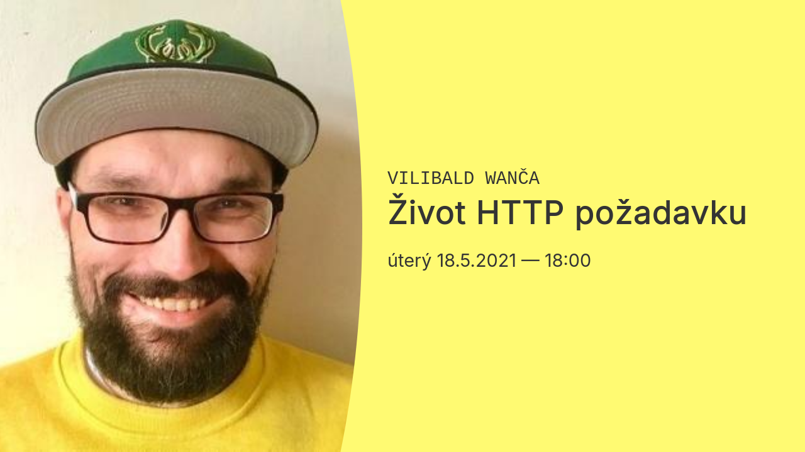

Vilibald Wanča: Život HTTP požadavku#
- 18.5.2021, 18:00
- Stáhni plakát
Tvůrci webových aplikací, ať už na frontendu nebo backendu, by měli o protokolu HTTP vědět co nejvíce, jelikož je to voda, ve které jejich výtvor přímo plave. Nicméně nejen oni. Téměř každý program dnes pracuje s internetem, ať už jede na serveru, na počítači, v prohlížeči, nebo na mobilu. V přednášce si jako přírodovědci v savaně dáme kameru na jeden HTTP požadavek a budeme jej pozorovat na jeho strastiplné cestě divočinou sítě: DNS, TLS, routing, TCP/UDP/IP, podsítě, Wi-Fi a Ethernet, OSI Model…

Vilibald Wanča
Vilibald Wanča je seniorní architekt v Oracle s 20letými zkušenostmi v oboru. Baví ho vymýšlet, jak udělat věci jednoduše, ale přitom zároveň dostatečně robustně, efektivně a výkonně. Málokdo ví o jeho kořenech v žižkovském podsvětí nebo angažmá na dubové scéně. Sedm let na ČRo Wave moderoval své Dubové okénko Prince Wilibalda.
Jak to funguje
- Klub junior.guru pořádá vzdělávací akce, online na svém Discordu. Tato akce proběhla 18.5.2021 a trvala 1,5h. Záznam si pustilo 81 členů.
- Členové klubu mohou akce sledovat živě a pokládat hostům vlastní dotazy. Taky mají k dispozici všechny záznamy proběhlých akcí.
- Do klubu se můžeš registrovat zdarma. Nemusíš nic platit, ani nic hlídat. Každý nový člen má totiž 14 dní na zkoušku. Když do dvou týdnů nezadáš kartu, automaticky ti vyprší přístup.
- Pokud už máš přístup do klubového Discordu, otevři si odkaz na záznam a sleduj!
- Pojetí akcí je vždy vyloženě pro začátečníky. Žádná záplava odborných „termitů“, které ti nikdo nevysvětlil!

Chceš pokládat hostům vlastní dotazy? Využiješ video archiv s 58 záznamy?
Na junior.guru Discordu si pomáhá 261 lidí, které zajímá svět IT juniorů. Začátečníci, kteří hledají komunitu a podporu. Senioři s chutí sdílet své zkušenosti. K tomu pravidelné online akce a mnoho dalšího.